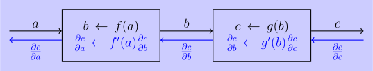
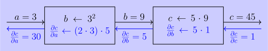

# === importing PyTorch ===
import torch3 Deep Learning with PyTorch
3.1 PyTorch
PyTorch is a library for deep learning. In this chapter, we’ll introduce its most core features, and we’ll cover everything else along the way later on.
We can import it with:
3.2 Tensors
The term ‘tensor’ can have different meanings depending on the field (see Wikipedia). In PyTorch, a tensor is essentially a multidimensional array with a lot of useful functionality built in. They are the fundamental data structure used for computations involving neural networks (NNs).
3.2.1 Creating Tensors and Tensor Shapes
We can ‘lift’ a python list into the universe of tensors. For example, here we convert a list into a rank-1 tensor (aka a vector):
# === a vector in PyTorch ===
torch.tensor([1, 2, 3])tensor([1, 2, 3])The rank of a tensor indicates how many indices you need to specify to access a single element.
# === ranks of tensors ===
# a rank-1 tensor takes 1 index
v = torch.tensor([1, 2, 3])
print(f"Element at index 0: {v[0]}")
# a rank-1 tensor takes 2 indices
m = torch.tensor([[1, 2], [3, 4]])
print(f"Element at (0,1): {m[0][1]}")
# a rank-3 tensor takes 3 indices
t = torch.tensor([[[1, 2], [3, 4]], [[5, 6], [7, 8]]])
print(f"Element at (0,1,0): {t[0][1][0]}")Element at index 0: 1
Element at (0,1): 2
Element at (0,1,0): 3The term ‘dimension’ is often used interchangeably with rank. This was a bit confusing for me initially! Let me briefly explain why the term ‘dimension’ is used:
It’s not the same as the ‘dimension’ used when discussing vectors (e.g., a 3-dimensional vector), which refers to the degrees of freedom within the underlying vector space. Instead, it refers to the tensor’s size as a discrete space - the rank represents the number of independent directions you can move between elements.
I’ll stick to ‘rank’ when talking about tensors, and generally use the terminology from TensorFlow’s introduction to tensors.
Instead of converting Python arrays into tensors, we can also create them directly:
# === common tensor creation methods ===
print("\n a rank-2 tensor full of 0s")
print(torch.zeros((3, 2)))
print("\n a rank-2 tensor full of 7s")
print(torch.full((3, 2), 7))
print("\n a rank-2 tensor of random integers [0-9]")
print(torch.randint(0, 10, (3, 2)))
a rank-2 tensor full of 0s
tensor([[0., 0.],
[0., 0.],
[0., 0.]])
a rank-2 tensor full of 7s
tensor([[7, 7],
[7, 7],
[7, 7]])
a rank-2 tensor of random integers [0-9]
tensor([[7, 0],
[3, 5],
[5, 0]])The tuple (3, 2) in the code above defines the tensor’s shape: how many axes it has and the size of each. So in this example, the first axis has size 3 and the second has size 2.
We can query the shape of a tensor with .shape.
# === the shape of a tensor ===
t = torch.zeros((3, 2))
print(t.shape)torch.Size([3, 2])The return type is torch.Size, which is PyTorch’s internal way of representing shape.
A special case of tensors are scalars, rank-0 tensors, whose shape is \(()\).
# === scalar tensor ===
t = torch.tensor(2)
print(t)
print(t.shape)tensor(2)
torch.Size([])3.2.2 Indexing
To illustrate tensor indexing, we consider a tensor of shape (2, 3, 4) where each element’s value represents its coordinates in mathematical notation:
# === index positions of tensors ===
# each entry in this tensor shows it's coordinate in mathematical notation
t = torch.tensor(
[
[[111, 112, 113, 114], [121, 122, 123, 124], [131, 132, 133, 134]],
[[211, 212, 213, 214], [221, 222, 223, 224], [231, 232, 233, 234]],
]
)
print(t)
print(f"The element at mathematical coordinates (2,3,4) is: {t[1][2][3]}")tensor([[[111, 112, 113, 114],
[121, 122, 123, 124],
[131, 132, 133, 134]],
[[211, 212, 213, 214],
[221, 222, 223, 224],
[231, 232, 233, 234]]])
The element at mathematical coordinates (2,3,4) is: 234So, the order of the indices reflects the order of the axes in the shape. Therefore, t[0][1][2] refers to the element at index 0 along the first axis, index 1 along the second axis, and index 2 along the third axis.
3.3 Linear neural nets
Let’s explore the simplest type of neural network: the linear neural network. The basic ideas used here apply to more complex ones too.
To work with neural networks in PyTorch, we import the nn module:
import torch.nn as nnA linear neural network consists of input and output nodes, where each input signal is multiplied by a weight and passed to an output node. Each output node also has a constant bias added to it.
Let’s look at a little example.
# === linear nn with custom parameters ===
# create a linear layer
linear_nn = nn.Linear(3, 2)
# manually set the weights
weights = torch.FloatTensor([[1, 0, 1], [0, 1, -1]])
# manually set the bias
bias = torch.FloatTensor([2, -3])
# assign the weights and bias to the linear layer
linear_nn.weight = nn.Parameter(weights)
linear_nn.bias = nn.Parameter(bias)- 1
-
neural networks in PyTorch require floating-point tensors. That’s why we used
torch.FloatTensorto create the weights and biases - 2
-
a
nn.Parameteris a tensor that is recognized as a learnable parameter of the neural network. We’ll come back to that later when we discuss stochastic gradient descent (Section 3.4)
When we apply this network to to a vector \((x,y,z)\), the computation is equivalent to: \[ \mathrm{linear\_nn}(x,y,z) = \begin{pmatrix} 1 & 0 & 1 \\ 0 & 1 & -1 \end{pmatrix} \begin{pmatrix} x \\ y \\ z \end{pmatrix} + \begin{pmatrix} 2 \\ -3 \end{pmatrix} \]
For example for the input \((1,0,0)\) we should get \((3,-3)\). We can check this by using .forward(x) to pass a tensor into the network:
# === applying the network to an input ===
v = torch.tensor([1.0, 0.0, 0.0])
linear_nn.forward(v)- 1
- instead of explicitly using torch.FloatTensor, we can implicitly coerce PyTorch into creating the correct tensor type by specifying float literals (e.g., 1.0 instead of 1).
tensor([ 3., -3.], grad_fn=<ViewBackward0>)We get the expected result, but there’s an additional detail: grad_fn=<ViewBackward0>. This is the first indication of PyTorch’s internal gradient tracking mechanism - a core requirement for stochastic gradient descent (SGD), which we’ll explore in the next chapter. We’ll return uncover the mystery of ViewBackward0 in Section 3.5.5.
3.4 Stochastic Gradient Descent
We can model the behaviour of a neural network as a function \(f(x_i;\theta)\) that maps inputs to outputs, defined by a set of learnable parameters, denoted as \(θ\).
At its core, training a neural network means finding model parameters that minimize a loss function \[ L(\theta) = \frac{1}{N} \sum_{i=1}^N \ell(f(x_i;\theta), y_i), \]
where:
- \((x_i, y_i)\) represents a training sample (input-output pair)
- \(\ell\) measures prediction error for individual samples
- \(L\) represents the average loss across all \(N\) samples in a batch
- \(f(x_i, \theta)\) is the network’s prediction given input \(x_i\) and parameters \(\theta\).
This is called ‘stochastic’ gradient descent, because the \(x_i,y_i\) are sampled by some stochastic process.
For basic stochastic gradient descent, we try to minimise the loss by iteratively adjusting the parameters against the gradient: \[ \theta \gets \theta - \eta \nabla_{\theta}L(\theta), \]
where \(\eta\) is the learning rate, which controls the step size of each update.
3.4.1 Single Gradient Descent Step
Let’s look at a simple example of such an update step, using a tiny linear neural network with just one input and one output. Its parameters are \(\theta = (w, b)\). We’ll train it on a single sample \((x,y)=(3,5)\) - we ignore batches for now - using the squared error: \[ L(f(x;\theta), y) = (f(x;\theta) - y)^2 \]
We want to work out the gradient by hand to see which way it points for parameters \(\theta =(0,0)\). The loss is: \[ \begin{split} L((w,b)) &= (3w + b - 5)^2\\ &= 9w^2 + 6w(b-5) + (b-5)^2 \end{split} \]
So the gradient is \[ \nabla_\theta L = \begin{pmatrix} 18w + 6b - 30 \\ 6w + 2b - 10 \end{pmatrix} \quad \Rightarrow \quad \nabla_\theta L(0,0) = \begin{pmatrix} - 30 \\ - 10 \end{pmatrix} \]
Now, letting PyTorch calculate the gradient, we get the same result (which feels a bit magical):
# === one SGD step: calculating gradient ===
import torch.nn as nn
import torch
# linear model: f(x) = 0.0 x + 0.0
model_net = nn.Linear(1, 1)
model_net.weight = nn.Parameter(torch.tensor([[0.0]]))
model_net.bias = nn.Parameter(torch.tensor([0.0]))
# sample
x = torch.tensor([3.0])
y = torch.tensor([5.0])
# loss function
def loss(prediction, target) -> float:
return (prediction - target).pow(2)
# gradient calculation
L = loss(model_net.forward(x), y)
L.backward() # computes ∇L for each model parameter
# this is how we access the components of ∇L
print(f"∂L/∂w: {model_net.weight.grad}")
print(f"∂L/∂b: {model_net.bias.grad}")- 1
- the weight parameter is a tensor of shape (inputs, outputs) = (1, 1), which as a list is just [[w]].
∂L/∂w: tensor([[-30.]])
∂L/∂b: tensor([-10.])Note the nice terminology. We use .forward(x) to push a tensor x through our net. And with .backward() we propagate the loss through the net backwards: During the forward flow, the data enters the network and flows in one direction, from input layer to the output layer. During the backward pass, it calculates the gradients of the loss function with respect to all the learnable parameters (weights and biases) in the network. This backward pass is tracing the influence to the loss back through all the calculations that contributed to it. It’s in the opposite direction of the forward flow.
To complete the “one stochastic gradient descent step” we need to update the model parameters, by walking against the gradient:
# === one SGD step: updating model parameters ===
learning_rate = 0.01 # η
# θ ← θ - η ∇L(θ)
new_weight = model_net.weight - learning_rate * model_net.weight.grad
new_bias = model_net.bias - learning_rate * model_net.bias.grad
print("The new parameters are:")
print(f"weight: {new_weight}")
print(f"bias: {new_bias}")- 1
- The learning rate here is chosen somewhat arbitrarily. In practice, it has to be small enough to avoid overshooting but big enough to achieve progress.
The new parameters are:
weight: tensor([[0.3000]], grad_fn=<SubBackward0>)
bias: tensor([0.1000], grad_fn=<SubBackward0>)And the new parameters do perform better regarding the loss
# === one SGD step: new vs old parameters ===
# model with new parameters
new_model_net = nn.Linear(1, 1)
new_model_net.weight = nn.Parameter(new_weight)
new_model_net.bias = nn.Parameter(new_bias)
# predictions
old_prediction = model_net.forward(x)
new_prediction = new_model_net.forward(x)
# losses
old_loss = loss(old_prediction, y).item()
new_loss = loss(new_prediction, y).item()
print(f"loss old: {old_loss} > loss new: {new_loss}")- 1
-
we can use
item()to get a number from a tensor that has one element
loss old: 25.0 > loss new: 16.03.4.2 Stochastic GD and Deterministic GD
Let’s extend our one-step example into a proper little stochastic gradient descent (SGD) routine. The goal is to train our model function \(f(x;\theta)\) to approximate a target function \(f(x;\theta_*)\), where the target parameters are \(\theta_* = (2,1)\).
The premise is that we don’t know the target parameters - we can only draw samples from the target function. In our example, we sample the values of \(x\) uniformly from the interval \([0,1)\).
Now, we set up a small program that performs gradient descent: \[ \theta_{t+1} \gets \theta_t - \eta \nabla_{\theta}L(f(x_t;\theta_t),y_t), \]
with \(L(x,y) = (x - y)^2\), \(y_t = f(x_t, \theta_*)\), and \(\theta_0 = (0,0)\).
# === stochastic GD ===
type Parameter = tuple[float, float]
def stochastic_gradient_descent(steps, target_parameters, seed=0) -> list[Parameter]:
"""performs SGD for a specified number of steps"""
torch.manual_seed(seed)
learning_rate = 0.1 # η
# target function with given target_parameters
target_function = nn.Linear(1, 1)
target_function.weight = nn.Parameter(torch.tensor([[target_parameters[0]]]))
target_function.bias = nn.Parameter(torch.tensor(target_parameters[1]))
# model function initialized with (w,b) = (0,0)
model_net = nn.Linear(1, 1)
model_net.weight = nn.Parameter(torch.tensor([[0.0]]))
model_net.bias = nn.Parameter(torch.tensor([0.0]))
def train(x, y):
# compute the loss gradient
prediction = model_net.forward(x)
loss = (prediction - y).pow(2)
loss.backward()
# walk the parameters against gradient
model_net.weight = nn.Parameter(
model_net.weight - learning_rate * model_net.weight.grad
)
model_net.bias = nn.Parameter(model_net.bias - learning_rate * model_net.bias.grad)
# perform training steps and record parameter trajectory
trajectory = []
for _ in range(steps):
# record θ
current_parameter = (
model_net.weight.data[0].item(),
model_net.bias.data.data[0].item(),
)
trajectory.append(current_parameter)
# generate sample
x = torch.rand((1, 1))
y = target_function.forward(x)
# train model network
train(x, y)
return trajectory
# execute SGD
target_parameters = (2.0, 1.0)
trajectory = stochastic_gradient_descent(200, target_parameters, seed=7)
print(f"target parameters: {target_parameters}")
print(f"final θ = {trajectory[-1]}")- 1
- it’s sometimes handy for debugging and demos to seed your random number generators (RNGs), as I’ve done here
- 2
-
in Python,
a_list[-1]accesses the last element. Here, that’s our final parameter estimate
target parameters: (2.0, 1.0)
final θ = (1.9013594388961792, 1.0614407062530518)We can see that the result of stochastic gradient descent gets us quite close to the target parameters.
This simple recipe:
1. sample data
2. compute loss
3. update parametersis one of the core routines behind training neural networks, even in far more complex learning systems. Of course, there should be some theory justifying how we sample data and define the loss function.
I want to push a little bit into this direction for our example - not too far, just enough to build some intuition. It might still be kind of abstract and not really palpable what is happening here.
Let’s see what stochastic gradient descent does on average. To find out, we compute the expected loss: \[ \begin{split} F(w,b) &= \mathbb{E}_{X \sim U(0,1)}[L(w,b)] \\ &= \mathbb{E}_{X\sim U(0,1)}\big[(wX + b - (2X +1))^2\big] \\ &= \int_0^1 ((w-2)x + (b-1))^2 \mathrm{d}x\\ &= \frac{(w-2)^2}{3} + (w-2)(b-1) + (b-1)^2 \end{split} \]
and its gradient \[ \nabla F(w,b) = \begin{pmatrix} \frac{2}{3}(w-2) + (b-1)\\ (w-2) + 2(b-1) \end{pmatrix} \]
Using this expected gradient removes the randomness - that’s why it’s called deterministic gradient descent. Of course, in practice, we don’t have access to this expectation.
We can write the deterministic GD update rule as: \[ \begin{pmatrix} w_{t+1}\\ b_{t+1} \end{pmatrix} = \begin{pmatrix} w_{t}\\ b_{t} \end{pmatrix} - \eta \underbrace{ \begin{pmatrix} \frac{2}{3} & 1 \\ 1 & 2 \end{pmatrix} }_{\mathbf{A}} \left( \underbrace{ \begin{pmatrix} w_{t}\\ b_{t} \end{pmatrix}}_{\mathbf{\theta}} - \underbrace{\begin{pmatrix} 2\\ 1 \end{pmatrix}} _{\mathbf{\theta}_*} \right) \]
So, there is some theory behind this that this converges when we let \(\eta\) become sufficiently small, but we are aiming for intuition here. Let’s just visualise the vector field defined by the update rule \(-\mathbf{A} (\theta - \theta_*)\), and see how both deterministic and stochastic GD move through parameter space.
Code
import numpy as np
import matplotlib.pyplot as plt
def plot_trajectory(title, target_parameters, trajectory, label):
# ── Settings ───────────────────────────────────
w_star, b_star = target_parameters
A = np.array([[2 / 3, 1.0], [1.0, 2.0]]) # Hessian of expected MSE
lr = 0.1
num_steps = len(trajectory)
# ── Build grid for vector field ───────────────
w_vals = np.linspace(0, 3, 15)
b_vals = np.linspace(0, 2, 15)
W, B = np.meshgrid(w_vals, b_vals)
U = np.zeros_like(W)
V = np.zeros_like(B)
# Compute field: (U,V) = - ∇F = -A·(θ−θ*)
for i in range(W.shape[0]):
for j in range(W.shape[1]):
theta = np.array([W[i, j], B[i, j]])
grad = A.dot(theta - np.array([w_star, b_star]))
U[i, j] = -grad[0]
V[i, j] = -grad[1]
# ── Deterministic GD trajectory ──────────────
det_path = [(0.0, 0.0)]
for _ in range(num_steps):
w, b = det_path[-1]
grad = A.dot(np.array([w, b]) - np.array([w_star, b_star]))
det_path.append((w - lr * grad[0], b - lr * grad[1]))
w_det, b_det = zip(*det_path)
# from PyTorch
w_torch, b_torch = zip(*trajectory)
# ── Plot vector field + paths ────────────────
plt.figure(figsize=(8, 6))
plt.quiver(W, B, U, V, angles="xy", scale_units="xy", alpha=0.5)
plt.plot(w_det, b_det, "o-", label="deterministic GD")
plt.plot(w_torch, b_torch, ".-", label=label)
plt.scatter([w_star], [b_star], marker="x", s=100, label="Optimum")
plt.text(w_star, b_star, " (2,1)", va="bottom")
plt.xlabel("Weight $w$")
plt.ylabel("Bias $b$")
plt.title(title)
plt.legend()
plt.grid(True)
plt.tight_layout()
plt.show()
plot_trajectory(
f"SGD and GD Trajectories and Gradient Vector Field ({len(trajectory)} steps)",
target_parameters,
trajectory,
"stochastic GD",
)It’s nice to see that even though the stochastic GD bumbles along the 2D-plane, it kind of follows the path of the deterministic GD.
3.4.3 Batches
So far we’ve been training on one sample at a time. In reality, neural networks are designed to consume batches of inputs - and PyTorch has been quietly reshaping our single inputs into 1-element batches form behind the scenes.
Instead of feeding tensors one by one, we can stack them and process them together:
# === batched input ===
model_net = nn.Linear(1, 1)
model_net.weight = nn.Parameter(torch.tensor([[1.0]]))
model_net.bias = nn.Parameter(torch.tensor([2.0]))
batch = torch.Tensor([[1.0], [2.0], [3]])
model_net.forward(batch)tensor([[3.],
[4.],
[5.]], grad_fn=<AddmmBackward0>)This forward call effectively maps the network across each row of the batch, giving the same result as looping over the elements.
More generally, if a network is designed for input shape s_in and returns outputs of shape s_out, then it actually consumes batches of inputs with shape (b, s_in) and return outputs with shape (b, s_out).
So, how is PyTorch treating unbatched samples as batches? It’s essentially reshaping a single-element tensor like [x] into [[x]] - a (1,1)-shaped tensor. This can be done manually using .unsqueeze(0):
# === adding extra axis ===
t = torch.tensor([1, 2])
t.unsqueeze(0)tensor([[1, 2]])This adds an extra axis of size 1. To remove such singleton dimensions, we can use .squeeze():
# === removing axes of size 1 ==
t = torch.randn(2, 1, 2, 1)
print(f"before squeeze: {t.shape}")
t = t.squeeze()
print(f"after squeeze: {t.shape}")before squeeze: torch.Size([2, 1, 2, 1])
after squeeze: torch.Size([2, 2])Back to gradient descent. Our original loss function for gradient descent also included batching: \[ L(\theta) = \frac{1}{N} \sum_{i = 1}^N \ell(f(x_i);\theta, y_i), \]
where \(L\) is the mean of \(\ell\) over the batch. This reduces the noisiness of updates.
Let’s modify our SGD to use batches:
# === batch GD ===
def batch_gradient_descent(
batch_size, steps, target_parameters, seed=0
) -> list[Parameter]:
"""performs batch GD for a specified number of steps"""
torch.manual_seed(seed)
step_size = 0.1
# target function with given target_parameters
target_function = nn.Linear(1, 1)
target_function.weight = nn.Parameter(torch.tensor([[target_parameters[0]]]))
target_function.bias = nn.Parameter(torch.tensor([target_parameters[1]]))
# model function initialized with (w,b) = (0,0)
model_net = nn.Linear(1, 1)
model_net.weight = nn.Parameter(torch.tensor([[0.0]]))
model_net.bias = nn.Parameter(torch.tensor([0.0]))
def train(x_batch, y_batch):
# compute the mean loss gradient
prediction_batch = model_net.forward(x_batch)
mean_loss = (prediction_batch - y_batch).pow(2).mean()
mean_loss.backward()
# walk the parameters against gradient
model_net.weight = nn.Parameter(
model_net.weight - step_size * model_net.weight.grad
)
model_net.bias = nn.Parameter(model_net.bias - step_size * model_net.bias.grad)
# perform training steps and record parameter trajectory
trajectory = []
for _ in range(steps):
# record θ
current_parameter = (
model_net.weight.data[0].item(),
model_net.bias.data.data[0].item(),
)
trajectory.append(current_parameter)
# generate batch sample
x_batch = torch.rand((batch_size, 1))
y_batch = target_function.forward(x_batch)
# train model network
train(x_batch, y_batch)
return trajectory
# execute batch GD
target_parameters = (2.0, 1.0)
trajectory = batch_gradient_descent(20, 200, target_parameters)
plot_trajectory(
f"SGD and batch GD Trajectories and Gradient Vector Field ({len(trajectory)} steps)",
target_parameters,
trajectory,
"batch GD",
)- 1
- the code for computing the squared errors is identical to the single-sample version (except the mean at the end). Many scalar operations naturally extend to tensors
The batched version stays closer to the deterministic path. That’s expected - averaging reduces the variance. However, we’ve now done 200 steps with batches of 20, so in effect, we’ve increased the amount of data processed by a factor of 20.
But are we paying for that in compute? Let’s benchmark:
Code
import time
import statistics
def run_experiment(
gradient_descent_type, *args, target_parameters=(2.0, 1.0), iterations=20
):
"""
times performance and evaluates accuracy for stochastic or batch GD.
"""
start = time.time()
results = [
gradient_descent_type(*args, target_parameters, seed=i)[-1]
for i in range(iterations)
]
elapsed_time = time.time() - start
squared_errors = [
(w - target_parameters[0]) ** 2 + (b - target_parameters[1]) ** 2
for (w, b) in results
]
mean_squared_error = statistics.mean(squared_errors)
print(f"time: {elapsed_time:.2f} seconds")
print(f"mean squared error: {mean_squared_error:.4f}")
steps = 200
iterations = 20
batch_size = 20
print(f"=== Comparison between SGD and batch GD ===")
print(f"{steps} steps averaged over {iterations} iterations")
# Run plain stochastic gradient descent (200 steps total)
print("\n--- stochastic GD ---")
run_experiment(stochastic_gradient_descent, 200)
# Run batched gradient descent (20 batches of 200 steps total)
print(f"\n--- batch GD (batch size: {batch_size}) ---")
run_experiment(batch_gradient_descent, 20, 200)=== Comparison between SGD and batch GD ===
200 steps averaged over 20 iterations
--- stochastic GD ---
time: 0.46 seconds
mean squared error: 0.0094
--- batch GD (batch size: 20) ---
time: 0.51 seconds
mean squared error: 0.0086The non-batched version runs faster, but not 20× faster. Maybe 10% or so. On the other hand, the batched version gives a lower mean squared error.
Choosing a good batch size is part of what’s known as hyperparameter tuning.
3.5 Gradients
Alright, it’s time to see how PyTorch computes all the gradients we’ve been happily using in gradient descent. Let’s look at a simple example that performs some operations on a scalar tensor and computes its gradient (more precisely, its derivative in this case):
# === calculating derivative ===
a = torch.tensor(3.0)
a.requires_grad = True
b = a.pow(2)
c = b * 5
c.backward()
a.gradtensor(30.)We needed to set requires_grad = True so that PyTorch would track the gradient of a. We haven’t seen this before because for network parameters (nn.Parameter), it’s automatically set to True.
3.5.1 Why Bother
Before diving deeper, I’ll admit I wasn’t originally keen on writing this. It sounded technical, and the buzzwordy explanation that ‘PyTorch backpropagates gradients using the chain rule’ felt like enough to get a rough intuition. But after watching Karpathy (2016), I found it really interesting. This presentation of PyTorch’s gradient mechanics is very much inspired by that video. The author also gives their own take on ‘why bother learning what PyTorch does automatically for you’.
3.5.2 Backpropagation
PyTorch uses backpropagation to compute gradients. We’ll unpack how this works using the simple example above. The computation has the structure:
\(a \gets 3\)
\(b \gets f(a)\)
\(c \gets g(b)\)
\(b \gets f(a)\)
\(c \gets g(b)\)
What we want is the derivative \((g \circ f)'(a)\), and we’ll compute it in a way that mirrors how backpropagation works. First, let’s visualise the computation of \(c\) - known as the forward pass - using a circuit graph, where each function is a ‘gate’:
Backpropagation works by computing derivatives in the reverse direction, using the chain rule: \[ (g \circ f)'(a) = g'(f(a))\; f'(a). \]
Or, in Leibniz notation and using \(b = f(a)\) and \(c = g(b)\): \[ \frac{\partial c}{\partial a} = \frac{\partial c}{\partial b} \;\frac{\partial b}{\partial a}. \]
To compute \(\frac{\partial c}{\partial a}\), each gate uses the ‘local’ derivatives of its forward pass function \(f'(a) = \frac{\partial b}{\partial a}\) and \(g'(b) = \frac{\partial c}{\partial b}\), and the process starts with the identity derivative \(\frac{\partial c}{\partial c} = 1\). The backward pass then has this structure:
\(\frac{\partial c}{\partial c} \gets 1\)
\(\frac{\partial c}{\partial b} \gets \frac{\partial c}{\partial c} \cdot g'(b)\)
\(\frac{\partial c}{\partial a} \gets \frac{\partial c}{\partial b} \cdot f'(a)\)
\(\frac{\partial c}{\partial b} \gets \frac{\partial c}{\partial c} \cdot g'(b)\)
\(\frac{\partial c}{\partial a} \gets \frac{\partial c}{\partial b} \cdot f'(a)\)
Each step follows from the chain rule. This is how we traverse the computation graph in reverse - and we can now augment the forward pass diagram with the backward pass:

That’s, in a nutshell, how backpropagation works - and how PyTorch computes gradients.
Finally, let’s verify that this produces the same result of \(30\) as in our original example. For \(f(a) = a^2\), \(g(b) = 5b\) with \(f'(a) = 2a\), \(g'(b) = 5\), we get:

In practice, it’s a bit more complicated of course. For example, we have talked about derivatives but we need to compute gradients - that is, partial derivatives with respect to multiple variables. For example, if we have a function \(f(x, y)\), with gradient \(\nabla f = (\frac{\partial f}{\partial x}, \frac{\partial f}{\partial x})\) the backward pass through its gate looks like this (forward pass not shown).
In general, each gate in the backward pass receives an upstream gradient, multiplies it by its local gradients, and sends the results downstream.
3.5.3 grad_fn
For PyTorch to find it’s way ‘back’ in the backpropagation under the hood, it dynamically builds a computational graph during the forward pass, storing the sequence of operations. Also, each non-leaf tensor stores a reference to the local gradient functions in the grad_fn attribute.
When we call .backward(), PyTorch traverses that graph in reverse order, applying those gradient functions to propagate gradients back to the leaves, just as we’ve discussed.
For example, when we compute x + y, the resulting tensor stores grad_fn = <AddBackward0> - the ‘backward’ function that computes the gradient of the addition:
# === the grad_fn attribute ===
x = torch.tensor(1.0, requires_grad=True)
y = torch.tensor(2.0, requires_grad=True)
x + ytensor(3., grad_fn=<AddBackward0>)We haven’t called .backward() here, so no gradients have been computed yet. But PyTorch has already set up the computation graph, so it’s ready to go as soon as one needs gradients with respect to x and y.
3.5.4 Gradients and Control Structures
Because backpropagation uses the computational graph, it handles control structures just fine - as long as operations are traceable.
Here’s an example where we compute \(b = 10 \cdot a\) using a loop. PyTorch still gets the correct gradient for \(\frac{\partial b}{\partial a}\):
# === gradients calculation and control structures ===
a = torch.tensor(0.0, requires_grad=True)
b = torch.tensor(0.0)
for i in range(10):
b += a
b.backward()
print(f"∂b/∂a: {a.grad}")∂b/∂a: 10.03.5.5 The mysterious of the viewBackward0
Now that we understand backpropagation and how neural networks process batches of inputs, we can revisit something we encountered earlier when introducing linear neural networks.
When we applied a linear neural network to some date we saw the attribute grad_fn=<ViewBackward0> popping up, like here
# === unbatched input ===
linear_nn = nn.Linear(3, 2)
v = torch.tensor([1.0, 0.0, 0.0])
linear_nn.forward(v) # grad_fn=<ViewBackward0>- 1
- if we initialize a network it’s parameters are randomly distributed
tensor([0.0356, 0.6774], grad_fn=<ViewBackward0>)So what’s going on?
We know that grad_fn stores the backward function of the final operation. In this case, apparently a view, i.e., an operation that returns a tensor on the same data but a different shape.
The code for handling linear layers is written in C++ and lies under aten/src/ATen/native/Linear.cpp in the PyTorch repository (at least, I think that’s the relevant code; I’m not 100% sure). The relevant part, which is called when the input is not a rank-2 tensor with some comments by me (I’m not 100% sure about the comments either)::
static inline Tensor _flatten_nd_linear(const Tensor& input, const Tensor& weight, const Tensor& bias) {
// get the sizes of the input tensor
const auto input_sizes = input.sym_sizes();
// calculate the flattened rank size
c10::SymInt flattened_dim = 1;
for (int64_t i = 0, ndim = input_sizes.size(); i < ndim - 1; ++i) {
flattened_dim = flattened_dim * input_sizes[i];
}
// reshape the input tensor to flatten all but the last axis
auto inp_reshape = input.reshape_symint({flattened_dim, input_sizes.at(input_sizes.size() -1)});
// perform the linear operation
const auto result = at::addmm(bias, inp_reshape, weight.t());
// calculate the new size of the output tensor
auto new_size = input_sizes.slice(0, input_sizes.size() - 1);
c10::SymDimVector sizes_vec(new_size.begin(), new_size.end());
sizes_vec.push_back(result.sym_size(1));
// reshape the output tensor to match the original input shape
return result.view_symint(sizes_vec);
}So basically, the linear networks expect inputs of dimension 2. If we provide a tensor without a batch dimension, PyTorch internally reshapes it, creating a view with an extra axis of size 1. Then it runs the computation, and finally reshapes the output back to having no batches.
When we explicitly provide a batch, that internal reshaping isn’t necessary. The final computation is then matrix multiplication plus bias addition, whose gradient function shows up as grad_fn = <AddmmBackward0>:
# === batched input ===
linear_nn = nn.Linear(3, 2)
v = torch.tensor([1.0, 0.0, 0.0]).unsqueeze(0)
linear_nn.forward(v) # grad_fn=<AddmmBackward0>tensor([[-0.1479, -0.1826]], grad_fn=<AddmmBackward0>)3.6 NN building blocks
Until now, we have only worked with a single linear layer. We can connect layers so that they feed into each other using nn.Sequential
# === combining networks ===
layer1 = nn.Linear(4, 125)
layer2 = nn.Linear(125, 125)
layer3 = nn.Linear(125, 2)
sequential_nn = nn.Sequential(layer1, layer2, layer3)
tensor = torch.tensor([1.0, 2.0, 3.0, 4.0]).unsqueeze(0)
# Applying sequential_nn produces the same as...
r_seq = sequential_nn(tensor)
print(f"sequential_nn: {r_seq}")
# ... applying the individual layers in order
r_con = layer3(layer2(layer1(tensor)))
print(f"concatenated: {r_con}")- 1
-
We have to make sure manually that our layers fit together. Otherwise, we might get something like this:
RuntimeError: mat1 and mat2 shapes cannot be multiplied (1x126 and 125x2) - 2
-
I haven’t used the
forwardfunction for the input but just applied the layer to the input directly. This is possible, because PyTorch’s neural networks are callable objects, which just invoke the the forward function
sequential_nn: tensor([[ 0.4786, -0.5196]], grad_fn=<AddmmBackward0>)
concatenated: tensor([[ 0.4786, -0.5196]], grad_fn=<AddmmBackward0>)Combining three linear layers doesn’t make much sense actually, as it is essentially multiplying three matrices together, resulting in a single matrix. Therefore, in our example, we could have simply used a single layer with 4 inputs and 2 outputs.
With linear layers, we are essentially limited to affine linear transformations. [Very technically, this is not entirely true. I recall seeing a YouTube video where only linear layers were used, and the non-linearity came from floating-point imprecision. However, I can’t find it.]
3.6.1 ReLU
To move beyond the linear world, we need to add some non-linear layers. A frequently used function used in layers is the ‘Rectified Linear Unit’ (ReLU), which is defined by this simple function: \[ \mathrm{ReLU}(x) = \max(0,x). \]
and get’s applied to each input.
In this example we can see that the third component gets clipped to 0.
# === ReLU clips input ===
layer = nn.ReLU()
layer(torch.tensor([1, 0, -1]).unsqueeze(0))tensor([[1, 0, 0]])So, if we are using a network like this, it cannot be simplified to just one layer:
# === combining linear with relu ===
sequential_nn = nn.Sequential(
nn.Linear(6, 125), nn.ReLU(), nn.Linear(125, 125), nn.ReLU(), nn.Linear(125, 2)
)
print(sequential_nn)- 1
- PyTorch provides us with a quick overview of a neural network whenever we print it.
Sequential(
(0): Linear(in_features=6, out_features=125, bias=True)
(1): ReLU()
(2): Linear(in_features=125, out_features=125, bias=True)
(3): ReLU()
(4): Linear(in_features=125, out_features=2, bias=True)
)We will a network like this to solve the CartPole environment.
3.7 Example - GAN on Atari images
This final example of in (Lapan 2024, chap. 3) is quite big and might look daunting. Although it may look intimidating initially, nearly half of it consists of neural network declarations, but there’s still plenty of new stuff. For starters, simply running the code, viewing the results in tensorboard, and identifying familiar elements from this chapter should be enough.
I had to ‘repair’ the code, so it would run for me. You can that code under /code/chapter_03/03_atari_gan.py.
3.7.1 Running
I use my IDE to run the code, but you can also use the command:
python3 code/chapter_03/03_atari_gan.pyYou should see output similar to this in the console:
A.L.E: Arcade Learning Environment (version 0.11.0+dfae0bd)
[Powered by Stella]
INFO:__main__:Iter 100 in 32.86s: gen_loss=5.530e+00, dis_loss=5.460e-02
INFO:__main__:Iter 200 in 33.80s: gen_loss=7.217e+00, dis_loss=5.016e-03The actual data produced will be saved in the /runs folder and can be viewed using TensorBoard.
3.7.2 Viewing the Data
If TensorBoard is installed (it should if you installed the requirements.txt), you can run:
tensorboard --logdir runsYou should see something like this in the console (don’t worry about the reduced feature set message):
TensorFlow installation not found - running with reduced feature set.
NOTE: Using experimental fast data loading logic. To disable, pass
"--load_fast=false" and report issues on GitHub. More details:
https://github.com/tensorflow/tensorboard/issues/4784
Serving TensorBoard on localhost; to expose to the network, use a proxy or pass --bind_all
TensorBoard 2.19.0 at http://localhost:6006/ (Press CTRL+C to quit)Clicking the link will open TensorBoard in your browser.
It liked watching the data flow into TensorBoard, observing the losses of the discriminator and generator fluctuate, and seeing the latest ‘phases’ the generator went through.
Here are some of the final images created by the generator in my run (yes, they are generated at that size):

03_atari_gan.py3.7.3 Discussing the code
The code defines two classes, Discriminator and Generator, which are the neural networks being trained. The Discriminator is presented with images from Atari games and images produced by the Generator. It is trained to distinguish between real and fake images. The Generator, on the other hand, creates images and is trained to convince the Discriminator that these images are real Atari game images.
Here’s a little code snippet that I copied from 03_atari_gan.py with some comments. Just to show that it also follows the basic training recipe:
# train generator
gen_optimizer.zero_grad() # gradients have to reset before computing new ones
dis_output_v = net_discr(gen_output_v) # sample data
gen_loss_v = objective(dis_output_v, true_labels_v) # compute loss
gen_loss_v.backward() # calculate gradient
gen_optimizer.step() # update parametersThis snippet uses:
- Optimizer: This updates the parameters in the direction of the gradient.
- Objective: This calculates the loss function.
We will delve deeper into these in the next chapter.
3.7.4 Discriminator vs Generator Loss
For fun, I’ve included the losses from my run here with some heavy smoothing to make the trends clearer. It seems that, in principle, when one loss goes up, the other goes down, which makes sense.
Note that the losses are on completely different scales. I think this means that the discriminator is quite confident about identifying fake images. However, the generator keeps using that tiny bit of uncertainty in the discriminator to improve its output quality.
Code
import pandas as pd
import matplotlib.pyplot as plt
from scipy.signal import savgol_filter
# adjust these paths to wherever you saved your CSVs
disc_csv = "quarto/data/atari_gan_dis_loss.csv"
gen_csv = "quarto/data/atari_gan_gen_loss.csv"
# load data
df_disc = pd.read_csv(disc_csv)
df_gen = pd.read_csv(gen_csv)
# smooth the losses using Savitzky-Golay filter
window_length = 31 # must be odd; larger = smoother
polyorder = 3 # polynomial order for the filter
df_disc["Smoothed_Value"] = savgol_filter(
df_disc["Value"], window_length=window_length, polyorder=polyorder
)
df_gen["Smoothed_Value"] = savgol_filter(
df_gen["Value"], window_length=window_length, polyorder=polyorder
)
# create plot
fig, ax1 = plt.subplots(figsize=(8, 5))
# left y-axis: Discriminator loss
ax1.plot(
df_disc["Step"],
df_disc["Smoothed_Value"],
color="tab:blue",
label="Discriminator Loss",
)
ax1.set_xlabel("Training Step")
ax1.set_ylabel("Discriminator Loss", color="tab:blue")
ax1.tick_params(axis="y", labelcolor="tab:blue")
# right y-axis: Generator loss
ax2 = ax1.twinx()
ax2.plot(
df_gen["Step"], df_gen["Smoothed_Value"], color="tab:orange", label="Generator Loss"
)
ax2.set_ylabel("Generator Loss", color="tab:orange")
ax2.tick_params(axis="y", labelcolor="tab:orange")
# title and layout
plt.title("GAN Losses (Dual Axis)")
fig.tight_layout()
plt.show()
Karpathy, Andrej. 2016. “CS231n Winter 2016: Lecture 4: Backpropagation, Neural Networks 1.” https://www.youtube.com/watch?v=i94OvYb6noo.
Lapan, Maxim. 2024. Deep Reinforcement Learning Hands-on. 3rd ed. Packt Publishing.